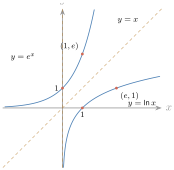
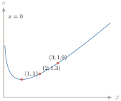
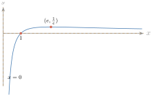
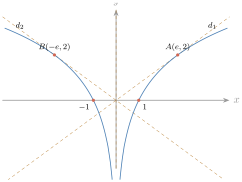
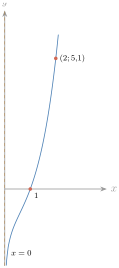

- រកលោការីតនេពែរ
- រកលីមីតនៃអនុគមន៍លោការីតនេពែរ
- រកដេរីវេនៃអនុគមន៍លោការីតនេពែរ
- សិក្សាអថេរភាពនិងសង់ក្រាបនៃអនុគមន៍ដែលទាក់ទងនឹងលោការីតនេពែរ ។
1. លោការីតនេពែរ
ឧទាហរណ៍ 1 : រកតម្លៃ \(\displaystyle x\) ដោយដឹងថា \(\displaystyle e^x = 1\) ។ តាមដំណោះស្រាយសមីការអិចស្ប៉ូណង់ស្យែល គេបាន \(\displaystyle e^x = e^0\) ឬ \(\displaystyle x = 0\) ។ គេថា \(\displaystyle x = 0\) ជាលោការីតនេពែរនៃ \(\displaystyle 1\) ហើយគេកំណត់សរសេរ \(\displaystyle 0 = \ln1\) ។
ឧទាហរណ៍ 2 : ដោះស្រាយសមីការ \(\displaystyle e^x = e\) ។ គេបាន \(\displaystyle e^x = e^1\) ហើយ \(\displaystyle x = 1\) ។ គេថា \(\displaystyle x = 1\) ជាលោការីតនេពែរនៃ \(\displaystyle e\) ហើយគេកំណត់សរសេរ \(\displaystyle 1 = \ln e\) ។
និយមន័យ លោការីតនេពែរនៃចំនួនវិជ្ជមាន \(\displaystyle k\) គឺជានិទស្សន្ត \(\displaystyle x\) នៃ \(\displaystyle e^x\) ដែល \(\displaystyle e^x = k\) ។ គេកំណត់សរសេរ \(\displaystyle x = \ln k\) ។ គេបាន \(\displaystyle x = \ln k\) សមមូល \(\displaystyle e^x = k\) ។
ដោយ \(\displaystyle x = \ln k\) និង \(\displaystyle e^x = k\) នោះគេបាន \(\displaystyle e^{\ln k} = k\) និង \(\displaystyle \ln e^k = k\) ចំពោះគ្រប់ \(\displaystyle k > 0\) (ដើម្បីឱ្យ \(\displaystyle \ln e^x = x\) ពិតចំពោះគ្រប់ចំនួនពិត \(\displaystyle x\)) ។
គណនាតម្លៃនៃកន្សោមខាងក្រោម ៖ ក. \(\displaystyle e^{\ln5}\) ខ. \(\displaystyle \ln e^{3x + 4}\) ។
ក. \(\displaystyle e^{\ln5} = 5\) ខ. \(\displaystyle \ln e^{3x + 4} = 3x + 4\) ។
គេយកប្រាក់ \(\displaystyle 1000\) ដុល្លារទៅផ្ញើនៅធនាគារមួយ ដោយទទួលបានអត្រាការប្រាក់សមាសប្រចាំឆ្នាំ \(\displaystyle 5\%\) ទូទាត់ជាបន្តបន្ទាប់ ។ ក. បើគេទុកប្រាក់នៅធនាគាររយៈពេល \(\displaystyle 10\) ឆ្នាំ តើគេទទួលបានសរុបចំនួនប៉ុន្មាន ? ខ. តើត្រូវទុកប្រាក់នៅធនាគារប៉ុន្មានឆ្នាំ ទើបចំនួនប្រាក់សរុបកើនដល់ \(\displaystyle 1500\) ដុល្លារ ?
ក. គេមាន \(\displaystyle A = pe^{rt}\) រូបមន្តការប្រាក់សមាស ដែល \(\displaystyle p = 1000\) ជាប្រាក់ដើម \(\displaystyle r = \dfrac{5}{100} = 0{,}05\) ជាអត្រាការប្រាក់សមាស និង \(\displaystyle t = 10\) ជាចំនួនឆ្នាំ ។ គេបាន \(\displaystyle A = 1000e^{(0{,}05)(10)} \approx 1648{,}72\) ដុល្លារ ។
ខ. គេដឹងថា \(\displaystyle A = 1500\) សមមូល \(\displaystyle 1000e^{0{,}05t} = 1500\) សមមូល \(\displaystyle e^{0{,}05t} = 1{,}5\) សមមូល \(\displaystyle 0{,}05t = \ln1{,}5\) សមមូល \(\displaystyle t = \dfrac{\ln1{,}5}{0{,}05} \approx 8{,}11\) ។ ដូច្នេះ ត្រូវដាក់ប្រាក់ប្រមាណ \(\displaystyle 8{,}11\) ឆ្នាំ ។
គណនាតម្លៃនៃកន្សោមខាងក្រោម ៖ ក. \(\displaystyle e^{\ln0{,}2}\) ខ. \(\displaystyle \ln e^{-4x}\) ។ ចម្លើយ ក. \(\displaystyle 0{,}2\) ខ. \(\displaystyle -4x\) ។
2. អនុគមន៍លោការីតនេពែរ
2.1. និយមន័យ
គេមាន \(\displaystyle e^x = 3\) គេបាន \(\displaystyle x = \ln3\) ។ គេមានអនុគមន៍ \(\displaystyle y = e^x\) ដែល \(\displaystyle x \in \mathbb{R}\) ។ គេបាន \(\displaystyle y = e^x\) សមមូល \(\displaystyle x = \ln y\) ។ អនុគមន៍នេះមាន \(\displaystyle x\) ជាអថេរ ហើយ \(\displaystyle y\) ជារូបភាពនៃ \(\displaystyle x\) តាម \(\displaystyle \ln\) គេប្តូរ \(\displaystyle x\) ជា \(\displaystyle y\) និង \(\displaystyle y\) ជា \(\displaystyle x\) គេបាន \(\displaystyle y = \ln x\) ជាអនុគមន៍ប្រាសនៃអនុគមន៍ \(\displaystyle y = e^x\) ។ អនុគមន៍ដែលកំណត់ដោយ \(\displaystyle y = \ln x\) ហៅថា អនុគមន៍លោការីតនេពែរ ។
និយមន័យ បើ \(\displaystyle x > 0\) អនុគមន៍លោការីតនេពែរនៃ \(\displaystyle x\) ដែលកំណត់ដោយ \(\displaystyle y = \ln x\) ជាអនុគមន៍ប្រាសនៃអនុគមន៍អិចស្ប៉ូណង់ស្យែល \(\displaystyle y = e^x\) ។
2.2. ក្រាបនៃអនុគមន៍លោការីតនេពែរ
ឧទាហរណ៍ : សង់ក្រាបនៃអនុគមន៍ \(\displaystyle y = e^x\) និង \(\displaystyle y = \ln x\) ។ ដោយអនុគមន៍ \(\displaystyle y = \ln x\) ជាអនុគមន៍ប្រាសនៃ \(\displaystyle y = e^x\) នោះក្រាបនៃអនុគមន៍ទាំងពីរឆ្លុះគ្នាធៀបនឹងបន្ទាត់ \(\displaystyle y = x\) ។
| \(\displaystyle x\) | \(\displaystyle -1\) | \(\displaystyle 0\) | \(\displaystyle 1\) |
| \(\displaystyle y = e^x\) | \(\displaystyle \dfrac1e\) | \(\displaystyle 1\) | \(\displaystyle e\) |
| \(\displaystyle x\) | \(\displaystyle \dfrac1e\) | \(\displaystyle 1\) | \(\displaystyle e\) |
| \(\displaystyle y = \ln x\) | \(\displaystyle -1\) | \(\displaystyle 0\) | \(\displaystyle 1\) |

សង់ក្រាបនៃអនុគមន៍ ក. \(\displaystyle y = 2 + \ln x\) ខ. \(\displaystyle y = \ln(x - 2)\) ។
2.3. ដេរីវេនៃអនុគមន៍លោការីតនេពែរ
2.3.1. ដេរីវេនៃ \(\displaystyle y = \ln x\) គេមានអនុគមន៍ \(\displaystyle y = \ln x\) សមមូល \(\displaystyle e^y = x\) សមមូល \(\displaystyle (e^{\ln x})' = (x)'\) សមមូល \(\displaystyle (\ln x)' \cdot e^{\ln x} = 1\) សមមូល \(\displaystyle (\ln x)' = \dfrac{1}{e^{\ln x}} = \dfrac1x\) ។ ដូច្នេះ \(\displaystyle (\ln x)' = \dfrac1x\) ។
បើ \(\displaystyle f(x) = \ln x\) នោះ \(\displaystyle f'(x) = \dfrac1x\) ដែល \(\displaystyle x > 0\) ។
គណនាដេរីវេនៃអនុគមន៍ខាងក្រោម ៖ ក. \(\displaystyle y = x^3 + \ln x\) ខ. \(\displaystyle y = x^2\ln x\) ។
ក. \(\displaystyle y' = (x^3 + \ln x)' = 3x^2 + \dfrac1x\) ។ ខ. \(\displaystyle y' = (x^2\ln x)' = (x^2)'\ln x + x^2(\ln x)' = 2x\ln x + x\) ។
ក. \(\displaystyle y = x + 2\ln x\) ខ. \(\displaystyle y = x^4\ln x\) ។ ចម្លើយ ក. \(\displaystyle y' = 1 + \dfrac2x\) ខ. \(\displaystyle y' = x^3(4\ln x + 1)\) ។
2.3.2. ដេរីវេនៃ \(\displaystyle y = \ln U(x)\) គេមានអនុគមន៍ \(\displaystyle y = \ln U(x)\) សមមូល \(\displaystyle e^y = U(x)\) ។ \(\displaystyle [e^{\ln U(x)}]' = [U(x)]'\) សមមូល \(\displaystyle [\ln U(x)]' \cdot e^{\ln U(x)} = U'(x)\) សមមូល \(\displaystyle [\ln U(x)]' = \dfrac{U'(x)}{e^{\ln U(x)}} = \dfrac{U'(x)}{U(x)}\) ។ ដូច្នេះ \(\displaystyle [\ln U(x)]' = \dfrac{U'(x)}{U(x)}\), \(\displaystyle U(x) > 0\) ។
បើ \(\displaystyle g(x) = \ln U(x)\) នោះ \(\displaystyle g'(x) = \dfrac{U'(x)}{U(x)}\) ដែល \(\displaystyle U(x) > 0\) ។
គណនាដេរីវេនៃអនុគមន៍ \(\displaystyle f(x) = \dfrac{x^2\sqrt{5x + 1}}{(3x - 2)^3}\) ។
ដើម្បីឱ្យងាយស្រួលក្នុងការគណនាដេរីវេនៃ \(\displaystyle f(x)\) គេអាចរកលោការីតនេពែរនៃអង្គទាំងពីរ ជាមុនសិន ។ \(\displaystyle \ln f(x) = \ln\left[\dfrac{x^2\sqrt{5x + 1}}{(3x - 2)^3}\right] = \ln(x^2\sqrt{5x + 1}) - \ln(3x - 2)^3 = 2\ln x + \dfrac12\ln(5x + 1) - 3\ln(3x - 2)\) ។ គេបាន \(\displaystyle [\ln f(x)]' = \left[2\ln x + \dfrac12\ln(5x + 1) - 3\ln(3x - 2)\right]'\) នាំឱ្យ \(\displaystyle \dfrac{f'(x)}{f(x)} = \dfrac2x + \dfrac{5}{2(5x + 1)} - \dfrac{9}{3x - 2}\) ។ ដោយដាក់ជាភាគបែងរួម \(\displaystyle \dfrac{f'(x)}{f(x)} = \dfrac{4(5x + 1)(3x - 2) + 5x(3x - 2) - 18x(5x + 1)}{2x(5x + 1)(3x - 2)} = \dfrac{-15x^2 - 56x - 8}{2x(5x + 1)(3x - 2)}\) ។ ដូច្នេះ \(\displaystyle f'(x) = \dfrac{-15x^2 - 56x - 8}{2x(5x + 1)(3x - 2)} \cdot \dfrac{x^2\sqrt{5x + 1}}{(3x - 2)^3}\) ។ (សម្គាល់ ៖ ការពន្លាតភាគយក \(\displaystyle 4(5x+1)(3x-2) + 5x(3x-2) - 18x(5x+1) = 60x^2 - 28x - 8 + 15x^2 - 10x - 90x^2 - 18x = -15x^2 - 56x - 8\) ; សៀវភៅបោះពុម្ព \(\displaystyle -53x\) ជាកំហុស ។)
គណនាដេរីវេនៃអនុគមន៍ខាងក្រោម ៖ ក. \(\displaystyle f(x) = \ln(x^2 + 3x)\) ខ. \(\displaystyle f(x) = \ln(\cos x)\) គ. \(\displaystyle y = \ln(x^2 - 4)^3\) ។
មើលចម្លើយ
ក. \(\displaystyle f'(x) = \dfrac{2x + 3}{x^2 + 3x}\) ខ. \(\displaystyle f'(x) = -\tan x\) គ. \(\displaystyle y' = \dfrac{6x}{x^2 - 4}\) ។
3. សមីការនិងវិសមីការលោការីតនេពែរ
3.1. សមីការ
លំហាត់គំរូ 1 : ដោះស្រាយសមីការក្នុង \(\displaystyle \mathbb{R}\) ៖ \(\displaystyle \ln(x - 2) + \ln(x + 2) = \ln45\) ។
ដំណោះស្រាយ លក្ខខណ្ឌ \(\displaystyle x - 2 > 0\) និង \(\displaystyle x + 2 > 0\) គេបាន \(\displaystyle x > 2\) ជាលក្ខខណ្ឌដែលធ្វើឱ្យសមីការមានន័យ ។ \(\displaystyle \ln(x - 2) + \ln(x + 2) = \ln45\) សមមូល \(\displaystyle (x - 2)(x + 2) = 45\) ឬ \(\displaystyle x^2 - 49 = 0\) គេបាន \(\displaystyle x = 7\), \(\displaystyle x = -7\) ។ តាមលក្ខខណ្ឌ \(\displaystyle x > 2\) ដូច្នេះសមីការមានឫសតែមួយគត់គឺ \(\displaystyle x = 7\) ។
លំហាត់គំរូ 2 : ដោះស្រាយសមីការក្នុង \(\displaystyle \mathbb{R}\) ៖ \(\displaystyle 3e^{2x} + e^x - 10 = 0\) ។
ដំណោះស្រាយ សមីការអាចសរសេរ \(\displaystyle 3(e^x)^2 + e^x - 10 = 0\) ។ តាង \(\displaystyle t = e^x > 0\) សមីការទៅជា \(\displaystyle 3t^2 + t - 10 = 0\) គេបាន \(\displaystyle t = \dfrac53\), \(\displaystyle t = -2\) ។ ដោយ \(\displaystyle e^x > 0\) យើងបាន \(\displaystyle e^x = \dfrac53\), \(\displaystyle x = \ln\dfrac53\) ។
ដោះស្រាយសមីការខាងក្រោម ៖ ក. \(\displaystyle \ln(1 - x) + \ln(2x + 3) - \ln(x + 1) = \ln3\) ខ. \(\displaystyle \dfrac{e^x - 2}{e^x - 3} = 4\) ។ ចម្លើយ ក. \(\displaystyle x = 0\) ខ. \(\displaystyle x = \ln\dfrac{10}3\) ។
3.2. វិសមីការ
ដោះស្រាយវិសមីការក្នុង \(\displaystyle \mathbb{R}\) ៖ \(\displaystyle \ln(x + 3) + \ln(x + 5) \le \ln15\) ។
លក្ខខណ្ឌ \(\displaystyle x + 3 > 0\) និង \(\displaystyle x + 5 > 0\) នាំឱ្យ \(\displaystyle x > -3\) ។ វិសមីការអាចសរសេរ \(\displaystyle \ln(x + 3)(x + 5) \le \ln15\) ។ ដោយ \(\displaystyle e > 1\) វិសមីការមិនប្តូរទិសដៅ \(\displaystyle (x + 3)(x + 5) \le 15\) ឬ \(\displaystyle x^2 + 8x \le 0\) ។ ដោះស្រាយវិសមីការ \(\displaystyle -8 \le x \le 0\) ។ តាមលក្ខខណ្ឌ \(\displaystyle x > -3\) វិសមីការមានចម្លើយត្រឹមតែ \(\displaystyle -3 < x \le 0\) ។
ដោះស្រាយវិសមីការខាងក្រោម ៖ ក. \(\displaystyle \ln(x^2 - 4e^2) < 1 + \ln3x\) ខ. \(\displaystyle 3e^x - 10e^{-x} + 1 \ge 0\) ។ ចម្លើយ ក. \(\displaystyle x \in (2e, 4e)\) ខ. \(\displaystyle x \ge \ln\dfrac53\) ។
3.3. ប្រព័ន្ធសមីការ
ដោះស្រាយប្រព័ន្ធសមីការក្នុង \(\displaystyle \mathbb{R}\) ៖ \(\displaystyle \begin{cases} \ln y = \ln x + 2 \\ xy = 9e^2 \end{cases}\)
លក្ខខណ្ឌនៃប្រព័ន្ធគឺ \(\displaystyle x > 0\) និង \(\displaystyle y > 0\) ។ ប្រព័ន្ធសមីការអាចសរសេរ \(\displaystyle \begin{cases} \ln\dfrac yx = 2 \\ xy = 9e^2 \end{cases}\) ឬ \(\displaystyle \begin{cases} \ln\dfrac yx = \ln e^2 \\ xy = 9e^2 \end{cases}\) គេបាន \(\displaystyle \begin{cases} \dfrac yx = e^2 \\ xy = 9e^2 \end{cases}\) ដោះស្រាយប្រព័ន្ធ \(\displaystyle x = \pm3\) ។ ដោយ \(\displaystyle x > 0\) នោះ \(\displaystyle x = 3\) ហើយ \(\displaystyle y = 3e^2\) ។
ដោះស្រាយប្រព័ន្ធសមីការខាងក្រោម ៖ ក. \(\displaystyle \begin{cases} e^x + 2e^y = 1 \\ -3e^x + e^y = 4 \end{cases}\) ខ. \(\displaystyle \begin{cases} x + y = 65 \\ \ln x + \ln y = \ln1000 \end{cases}\) ។
មើលចម្លើយ
ក. គ្មានចម្លើយ (តាង \(\displaystyle u = e^x > 0\), \(\displaystyle v = e^y > 0\) បាន \(\displaystyle u = -1 < 0\)) ។ ខ. \(\displaystyle (x = 25, y = 40)\) ; \(\displaystyle (x = 40, y = 25)\) ។
4. សិក្សាអនុគមន៍ដែលទាក់ទងនឹងអនុគមន៍លោការីតនេពែរ
សិក្សាអថេរភាពនិងសង់ក្រាបនៃអនុគមន៍ \(\displaystyle f(x) = x - \ln x\) ។
\(\displaystyle C : f(x) = x - \ln x\)
- ដែនកំណត់ \(\displaystyle D = (0, +\infty)\) ។
- ទិសដៅអថេរភាព ៖ លីមីត \(\displaystyle \displaystyle\lim_{x \to 0^+}f(x) = \lim_{x \to 0^+}(x - \ln x) = +\infty\) (ព្រោះ \(\displaystyle \displaystyle\lim_{x \to 0^+}\ln x = -\infty\)) ; \(\displaystyle \displaystyle\lim_{x \to +\infty}f(x) = \lim_{x \to +\infty}(x - \ln x)\) (រាងមិនកំណត់ \(\displaystyle +\infty - \infty\)) \(\displaystyle = \displaystyle\lim_{x \to +\infty}x\left(1 - \dfrac{\ln x}{x}\right) = +\infty\) (ព្រោះ \(\displaystyle \displaystyle\lim_{x \to +\infty}\dfrac{\ln x}{x} = 0\)) ។
- ដេរីវេ \(\displaystyle f'(x) = (x - \ln x)' = 1 - \dfrac1x = \dfrac{x - 1}{x}\) ។ ដោយ \(\displaystyle x > 0\) នោះ \(\displaystyle f'(x)\) មានសញ្ញាដូច \(\displaystyle x - 1\) ; \(\displaystyle f'(x) = 0\) គេបាន \(\displaystyle x - 1 = 0\) នាំឱ្យ \(\displaystyle x = 1\) ។ ដូច្នេះ \(\displaystyle f\) ចុះលើ \(\displaystyle (0, 1)\) ហើយកើនលើ \(\displaystyle (1, +\infty)\) ។ តម្លៃអប្បបរមាធៀប \(\displaystyle f(1) = 1 - \ln1 = 1 - 0 = 1\) ។
- តារាងអថេរភាព ៖
| \(\displaystyle x\) | \(\displaystyle 0\) | \(\displaystyle 1\) | \(\displaystyle +\infty\) | ||
| \(\displaystyle f'(x)\) | \(\displaystyle \|\) | \(\displaystyle -\) | \(\displaystyle 0\) | \(\displaystyle +\) | |
| \(\displaystyle f(x)\) | \(\displaystyle +\infty\) | \(\displaystyle \searrow\) | \(\displaystyle 1\) | \(\displaystyle \nearrow\) | \(\displaystyle +\infty\) |
- សង់ក្រាប ៖ បន្ទាត់ \(\displaystyle x = 0\) ជាអាស៊ីមតូតឈរនៃក្រាប \(\displaystyle C\) ព្រោះ \(\displaystyle \displaystyle\lim_{x \to 0^+}\ln x = +\infty\) (គឺ \(\displaystyle \lim f = +\infty\)) ។ រកចំណុចជំនួយ ៖ \(\displaystyle f(2) = 2 - \ln2 \approx 1{,}3 \Rightarrow C\) កាត់តាមចំណុច \(\displaystyle (2; 1{,}3)\) ; \(\displaystyle f(3) = 3 - \ln3 \approx 1{,}9 \Rightarrow C\) កាត់តាមចំណុច \(\displaystyle (3; 1{,}9)\) ។

សិក្សាអថេរភាពនិងសង់ក្រាបនៃអនុគមន៍ \(\displaystyle f(x) = \dfrac{\ln x}{x}\) ។
\(\displaystyle C : f(x) = \dfrac{\ln x}{x}\)
- ដែនកំណត់ \(\displaystyle D = (0, +\infty)\) ។
- លីមីត ៖ \(\displaystyle \displaystyle\lim_{x \to 0^+}f(x) = \lim_{x \to 0^+}\dfrac{\ln x}{x} = -\infty\) (ព្រោះ \(\displaystyle \displaystyle\lim_{x \to 0^+}\ln x = -\infty\)) ; \(\displaystyle \displaystyle\lim_{x \to +\infty}f(x) = \lim_{x \to +\infty}\dfrac{\ln x}{x} = 0\) ។
- ដេរីវេ \(\displaystyle f'(x) = \left(\dfrac{\ln x}{x}\right)' = \dfrac{(\ln x)' \cdot x - (x)'\ln x}{x^2} = \dfrac{1 - \ln x}{x^2}\) ។ ដោយ \(\displaystyle x^2 > 0\) ចំពោះគ្រប់ \(\displaystyle x \in D\) នោះ \(\displaystyle f'(x)\) មានសញ្ញាដូច \(\displaystyle 1 - \ln x\) ។ \(\displaystyle 1 - \ln x = 0 \Leftrightarrow \ln x = 1 \Leftrightarrow x = e\) ; \(\displaystyle 1 - \ln x > 0 \Leftrightarrow \ln x < 1 \Leftrightarrow 0 < x < e\) ; \(\displaystyle 1 - \ln x < 0 \Leftrightarrow \ln x > 1 \Leftrightarrow x > e\) ។ ដូច្នេះ \(\displaystyle f\) កើនលើ \(\displaystyle (0, e)\) ហើយចុះលើ \(\displaystyle (e, +\infty)\) ។ តម្លៃអតិបរមាធៀប \(\displaystyle f(e) = \dfrac{\ln e}{e} = \dfrac1e\) ។
- តារាងអថេរភាព ៖
| \(\displaystyle x\) | \(\displaystyle 0\) | \(\displaystyle e\) | \(\displaystyle +\infty\) | ||
| \(\displaystyle f'(x)\) | \(\displaystyle \|\) | \(\displaystyle +\) | \(\displaystyle 0\) | \(\displaystyle -\) | |
| \(\displaystyle f(x)\) | \(\displaystyle -\infty\) | \(\displaystyle \nearrow\) | \(\displaystyle \dfrac1e\) | \(\displaystyle \searrow\) | \(\displaystyle 0\) |
- សំណង់ក្រាប ៖ បន្ទាត់ \(\displaystyle x = 0\) ជាអាស៊ីមតូតឈរនៃក្រាប \(\displaystyle C\) ព្រោះ \(\displaystyle \displaystyle\lim_{x \to 0^+}f(x) = -\infty\) ; បន្ទាត់ \(\displaystyle y = 0\) ជាអាស៊ីមតូតដេកនៃក្រាប \(\displaystyle C\) ព្រោះ \(\displaystyle \displaystyle\lim_{x \to +\infty}f(x) = 0\) ។ ជំនួស \(\displaystyle f(1) = \dfrac{\ln1}{1} = \dfrac01 = 0 \Rightarrow C\) កាត់តាមចំណុច \(\displaystyle (1, 0)\) ។

អនុគមន៍ \(\displaystyle f\) កំណត់លើ \(\displaystyle \mathbb{R} - \{0\}\) ដោយ \(\displaystyle f(x) = \ln(x^2)\) មានក្រាប \(\displaystyle C\) ។
ក. គណនា \(\displaystyle \displaystyle\lim_{x \to \pm\infty}f(x)\) និង \(\displaystyle \displaystyle\lim_{x \to 0}f(x)\) ។ រកសមីការអាស៊ីមតូតនៃក្រាប \(\displaystyle C\) ។
ខ. សិក្សាអថេរភាពនៃ \(\displaystyle f\) និងសង់តារាងអថេរភាពនៃ \(\displaystyle f\) ។
គ. រកសមីការបន្ទាត់ \(\displaystyle d_1\) ប៉ះក្រាប \(\displaystyle C\) ត្រង់ចំណុច \(\displaystyle A(e, 2)\) និងបន្ទាត់ \(\displaystyle d_2\) ប៉ះក្រាប \(\displaystyle C\) ត្រង់ចំណុច \(\displaystyle B(-e, 2)\) ។
ឃ. រកកូអរដោនេចំណុចប្រសព្វរវាងក្រាប \(\displaystyle C\) និងអ័ក្សអាប់ស៊ីស ។ សង់ក្រាប \(\displaystyle C\) បន្ទាត់ \(\displaystyle d_1\), \(\displaystyle d_2\) ក្នុងតម្រុយអរតូណរម៉ាល់ \(\displaystyle (O, \vec i, \vec j)\) មួយ ។
\(\displaystyle C : f(x) = \ln(x^2)\) : ដែនកំណត់ \(\displaystyle D = \mathbb{R} - \{0\}\) ។
ក. \(\displaystyle \displaystyle\lim_{x \to \pm\infty}f(x) = \lim_{x \to \pm\infty}\ln(x^2) = +\infty\) ; \(\displaystyle \displaystyle\lim_{x \to 0}f(x) = \lim_{x \to 0}\ln(x^2) = -\infty\) ។ បន្ទាត់ \(\displaystyle x = 0\) ជាអាស៊ីមតូតឈរនៃក្រាប \(\displaystyle C\) ។
ខ. ដេរីវេ \(\displaystyle f'(x) = [\ln(x^2)]' = \dfrac{(x^2)'}{x^2} = \dfrac{2x}{x^2} = \dfrac2x\) មានសញ្ញាដូច \(\displaystyle x\) ។ ដូច្នេះ \(\displaystyle f\) ចុះលើ \(\displaystyle (-\infty, 0)\) ព្រោះ \(\displaystyle f'(x) < 0\) ហើយកើនលើ \(\displaystyle (0, +\infty)\) ព្រោះ \(\displaystyle f'(x) > 0\) ។
| \(\displaystyle x\) | \(\displaystyle -\infty\) | \(\displaystyle 0\) | \(\displaystyle +\infty\) | ||
| \(\displaystyle f'(x)\) | \(\displaystyle -\) | \(\displaystyle \|\) | \(\displaystyle +\) | ||
| \(\displaystyle f(x)\) | \(\displaystyle +\infty\) | \(\displaystyle \searrow\) | \(\displaystyle \begin{matrix}-\infty \\ \| \\ -\infty\end{matrix}\) | \(\displaystyle \nearrow\) | \(\displaystyle +\infty\) |
គ. \(\displaystyle d_1 : y - y_0 = f'(x_0)(x - x_0)\) ។ ដោយ \(\displaystyle d_1\) ប៉ះ \(\displaystyle C\) ត្រង់ \(\displaystyle A(e, 2)\) នាំឱ្យ \(\displaystyle x_0 = e\), \(\displaystyle y_0 = 2\) និង \(\displaystyle f'(x_0) = f'(e) = \dfrac2e\) ។ នោះ \(\displaystyle d_1 : y - 2 = \dfrac2e(x - e) = \dfrac2ex - 2\) ។ ដូច្នេះ \(\displaystyle d_1 : y = \dfrac2ex\) ។ ម្យ៉ាងទៀត \(\displaystyle d_2\) ប៉ះ \(\displaystyle C\) ត្រង់ \(\displaystyle B(-e, 2)\) នាំឱ្យ \(\displaystyle x_0 = -e\), \(\displaystyle y_0 = 2\) និង \(\displaystyle f'(x_0) = f'(-e) = \dfrac{2}{-e} = -\dfrac2e\) ។ នោះ \(\displaystyle d_2 : y - 2 = -\dfrac2e(x + e) = -\dfrac2ex - 2\) ។ ដូច្នេះ \(\displaystyle d_2 : y = -\dfrac2ex\) ។
ឃ. \(\displaystyle y = 0 \Rightarrow \ln(x^2) = 0 \Rightarrow x^2 = 1 \Rightarrow x = \pm1\) ។ ដូច្នេះ \(\displaystyle C\) កាត់អ័ក្សអាប់ស៊ីសត្រង់ចំណុច \(\displaystyle (-1, 0)\) និង \(\displaystyle (1, 0)\) ។ សង់ក្រាប \(\displaystyle C\) បន្ទាត់ \(\displaystyle d_1\), \(\displaystyle d_2\) ៖ \(\displaystyle d_1 : y = \dfrac2ex\) ដែល \(\displaystyle x = 0 \to y = 0\) និង \(\displaystyle x = e \to y = 2\) ; \(\displaystyle d_2 : y = -\dfrac2ex\) ដែល \(\displaystyle x = 0 \to y = 0\) និង \(\displaystyle x = e \to y = -2\) ។

សិក្សាអថេរភាព និងសង់ក្រាបនៃអនុគមន៍ \(\displaystyle f(x) = e^x\ln x\) ។
\(\displaystyle C : f(x) = e^x\ln x\) ដែនកំណត់ \(\displaystyle D = (0, +\infty)\) ។
- លីមីត ៖ \(\displaystyle \displaystyle\lim_{x \to 0^+}f(x) = \lim_{x \to 0^+}e^x\ln x = -\infty\) (ព្រោះ \(\displaystyle \displaystyle\lim_{x \to 0^+}\ln x = -\infty\)) ; \(\displaystyle \displaystyle\lim_{x \to +\infty}f(x) = \lim_{x \to +\infty}e^x\ln x = +\infty\) (ព្រោះ \(\displaystyle \displaystyle\lim_{x \to +\infty}e^x = +\infty\), \(\displaystyle \displaystyle\lim_{x \to +\infty}\ln x = +\infty\)) ។
- ដេរីវេ \(\displaystyle f'(x) = (e^x\ln x)' = e^x\ln x + \dfrac1xe^x = e^x\left(\ln x + \dfrac1x\right)\) ។ ដោយ \(\displaystyle e^x > 0\) នោះ \(\displaystyle f'(x)\) មានសញ្ញាដូច \(\displaystyle \ln x + \dfrac1x\) ។ តាង \(\displaystyle g(x) = \ln x + \dfrac1x\), \(\displaystyle x > 0\) ; \(\displaystyle g'(x) = \dfrac1x - \dfrac{1}{x^2} = \dfrac{x - 1}{x^2}\) ដោយ \(\displaystyle x^2 > 0\) នោះ \(\displaystyle g'(x)\) មានសញ្ញាដូច \(\displaystyle x - 1\) ។ \(\displaystyle g'(x) = 0\) នាំឱ្យ \(\displaystyle x = 1\) ហើយ \(\displaystyle g(1) = \ln1 + \dfrac11 = 1\) ។ តារាង \(\displaystyle g\) ៖ ចុះលើ \(\displaystyle (0, 1)\) កើនលើ \(\displaystyle (1, +\infty)\) អប្បបរមា \(\displaystyle g(1) = 1\) ។ យើងឃើញថា \(\displaystyle g(x) \ge 1 > 0\) ចំពោះគ្រប់ \(\displaystyle x \in D\) ដោយ \(\displaystyle f'(x)\) មានសញ្ញាដូច \(\displaystyle g(x)\) នោះ \(\displaystyle f'(x) > 0\) ចំពោះគ្រប់ \(\displaystyle x \in D\) គេបានអនុគមន៍ \(\displaystyle f\) កើនជានិច្ចលើ \(\displaystyle D\) ។
- តារាងអថេរភាព ៖
| \(\displaystyle x\) | \(\displaystyle 0\) | \(\displaystyle +\infty\) | |
| \(\displaystyle f'(x)\) | \(\displaystyle \|\) | \(\displaystyle +\) | |
| \(\displaystyle f(x)\) | \(\displaystyle -\infty\) | \(\displaystyle \nearrow\) | \(\displaystyle +\infty\) |
- សំណង់ក្រាប ៖ បន្ទាត់ \(\displaystyle x = 0\) ជាអាស៊ីមតូតឈរនៃក្រាប \(\displaystyle C\) ព្រោះ \(\displaystyle \displaystyle\lim_{x \to 0^+}f(x) = -\infty\) ។ ជំនួស \(\displaystyle f(1) = e\ln1 = 0 \Rightarrow C\) កាត់តាមចំណុច \(\displaystyle (1, 0)\) ; \(\displaystyle f(2) = e^2\ln2 \approx 5{,}1 \Rightarrow C\) កាត់តាមចំណុច \(\displaystyle (2; 5{,}1)\) ។ (បន្ទាត់ \(\displaystyle y = 0\) មិនមែនជាអាស៊ីមតូតដេកទេ ព្រោះ \(\displaystyle \lim_{x \to +\infty}f = +\infty\) ។)

សិក្សាអថេរភាពនិងសង់ក្រាបអនុគមន៍ខាងក្រោម ៖ ក. \(\displaystyle f(x) = x^2 - 8\ln x\) ខ. \(\displaystyle y = x^2\ln x\) គ. \(\displaystyle y = f(x) = \begin{cases} x(1 - \ln x) & \text{បើ } x > 0 \\ 0 & \text{បើ } x = 0 \end{cases}\) ឃ. \(\displaystyle y = g(x) = 2x + \dfrac{x}{\ln x}\) ។
មើលចម្លើយ
ក. \(\displaystyle D = (0, +\infty)\) ; \(\displaystyle f'(x) = \dfrac{2(x^2 - 4)}{x}\) ; ចុះលើ \(\displaystyle (0, 2)\) កើនលើ \(\displaystyle (2, +\infty)\) ; អប្បបរមា \(\displaystyle f(2) = 4 - 8\ln2 \approx -1{,}55\) ; \(\displaystyle \displaystyle\lim_{x \to 0^+}f = +\infty\) (អាស៊ីមតូតឈរ \(\displaystyle x = 0\)) ; \(\displaystyle \displaystyle\lim_{x \to +\infty}f = +\infty\) ។
ខ. \(\displaystyle D = (0, +\infty)\) ; \(\displaystyle y' = x(2\ln x + 1)\) ; ចុះលើ \(\displaystyle \left(0, \dfrac{1}{\sqrt e}\right)\) កើនលើ \(\displaystyle \left(\dfrac{1}{\sqrt e}, +\infty\right)\) ; អប្បបរមា \(\displaystyle y\left(\dfrac1{\sqrt e}\right) = -\dfrac{1}{2e} \approx -0{,}18\) ; \(\displaystyle \displaystyle\lim_{x \to 0^+}y = 0\) (ក្រាបចូលទៅរកគល់ \(\displaystyle O\) តែ \(\displaystyle O\) មិនជាចំណុចនៃក្រាប ព្រោះ \(\displaystyle 0 \notin D\)) ; \(\displaystyle \displaystyle\lim_{x \to +\infty}y = +\infty\) ; កាត់អ័ក្ស \(\displaystyle Ox\) ត្រង់ \(\displaystyle x = 1\) ។
គ. \(\displaystyle f\) កំណត់ត្រង់ \(\displaystyle 0\) ដោយ \(\displaystyle f(0) = 0\) ហើយ \(\displaystyle \displaystyle\lim_{x \to 0^+}x(1 - \ln x) = 0\) ដូច្នេះ \(\displaystyle f\) ជាប់ត្រង់ \(\displaystyle 0\) ; \(\displaystyle \dfrac{f(x) - f(0)}{x} = 1 - \ln x \to +\infty\) ដូច្នេះក្រាបមានបន្ទាត់ប៉ះឈរត្រង់ \(\displaystyle O\) ; \(\displaystyle f'(x) = -\ln x\) ; កើនលើ \(\displaystyle (0, 1)\) ចុះលើ \(\displaystyle (1, +\infty)\) ; អតិបរមា \(\displaystyle f(1) = 1\) ; \(\displaystyle \displaystyle\lim_{x \to +\infty}f = -\infty\) ; កាត់អ័ក្ស \(\displaystyle Ox\) ត្រង់ \(\displaystyle x = e\) ។
ឃ. \(\displaystyle D = (0, 1) \cup (1, +\infty)\) ; \(\displaystyle g'(x) = \dfrac{(\ln x + 1)(2\ln x - 1)}{\ln^2x}\) ; \(\displaystyle g' = 0\) ត្រង់ \(\displaystyle x = \dfrac1e\) និង \(\displaystyle x = \sqrt e\) ; កើនលើ \(\displaystyle \left(0, \dfrac1e\right)\) ចុះលើ \(\displaystyle \left(\dfrac1e, 1\right)\) និង \(\displaystyle (1, \sqrt e)\) កើនលើ \(\displaystyle (\sqrt e, +\infty)\) ; អតិបរមាធៀប \(\displaystyle g\left(\dfrac1e\right) = \dfrac1e\) ; អប្បបរមាធៀប \(\displaystyle g(\sqrt e) = 4\sqrt e \approx 6{,}59\) ; \(\displaystyle \displaystyle\lim_{x \to 0^+}g = 0\) ; \(\displaystyle \displaystyle\lim_{x \to 1^-}g = -\infty\) ; \(\displaystyle \displaystyle\lim_{x \to 1^+}g = +\infty\) (អាស៊ីមតូតឈរ \(\displaystyle x = 1\)) ; \(\displaystyle \displaystyle\lim_{x \to +\infty}g = +\infty\) ។
5. អនុវត្តន៍
ការថយចុះអិចស្ប៉ូណង់ស្យែលដែលមានទម្រង់ \(\displaystyle y = ae^{-kt}\) ។ ធាតុវិទ្យុសកម្មនៃកាបូន (\(\displaystyle C-14\)) មានការថយចុះជាបន្តបន្ទាប់ក្នុងអត្រាមួយថេរ ។ ពាក់កណ្ដាលជីវិតនៃកាបូន (\(\displaystyle C-14\)) គឺ \(\displaystyle 5760\) ឆ្នាំ មានន័យថា \(\displaystyle 5760\) ឆ្នាំ កាបូន (\(\displaystyle C-14\)) បានពុកផុយម៉ាសចំនួនពាក់កណ្ដាល ។ ក. រកតម្លៃអត្រាថយចុះ \(\displaystyle k\) នៃកាបូន (\(\displaystyle C-14\)) ? ខ. អ្នកវិទ្យាសាស្ត្រខាងបូរាណវិទ្យាបានត្រួតពិនិត្យឆ្អឹងសត្វមួយប្រភេទ ហើយប៉ាន់ស្មានថាមានធាតុកាបូន (\(\displaystyle C-14\)) នៅសល់ចំនួន \(\displaystyle 3\%\) ។ តើសត្វនេះបានស្លាប់ប្រហែលប៉ុន្មានឆ្នាំហើយ ?
ក. គេមានរូបមន្តការថយចុះអិចស្ប៉ូណង់ស្យែល \(\displaystyle y = ae^{-kt}\) ដែល \(\displaystyle k\) ជាអត្រាថយចុះនៃកាបូន (\(\displaystyle C-14\)) \(\displaystyle a\) ជាចំនួនចាប់ផ្តើម \(\displaystyle y\) ជាបរិមាណនៅសល់បន្ទាប់ពី \(\displaystyle t = 5760\) ឆ្នាំនៃពាក់កណ្ដាលជីវិតរបស់កាបូន (\(\displaystyle C-14\)) គឺ \(\displaystyle \dfrac12a = 0{,}5a\) ។ គេបាន \(\displaystyle 0{,}5a = ae^{-k(5760)}\) សមមូល \(\displaystyle 0{,}5 = e^{-5760k}\) សមមូល \(\displaystyle \ln0{,}5 = -5760k\) សមមូល \(\displaystyle k = \dfrac{-\ln0{,}5}{5760} = \dfrac{\ln2}{5760} \approx 0{,}00012\) ។ ដូច្នេះ អត្រាថយចុះនៃកាបូន (\(\displaystyle C-14\)) គឺ \(\displaystyle 0{,}00012\) ។
ខ. តាង \(\displaystyle a\) ជាបរិមាណដំបូងនៃកាបូន (\(\displaystyle C-14\)) ក្នុងឆ្អឹងសត្វ ។ គេបាន \(\displaystyle 0{,}03a = ae^{-0{,}00012t}\) សមមូល \(\displaystyle \ln0{,}03 = -0{,}00012t\) សមមូល \(\displaystyle t = \dfrac{\ln0{,}03}{-0{,}00012} \approx 29\,221\) ។ ដូច្នេះ សត្វនេះស្លាប់តាំងពី \(\displaystyle 29\,221\) ឆ្នាំមុន (សៀវភៅប្រើ \(\displaystyle k\) បង្គត់ ; បើប្រើ \(\displaystyle k = \dfrac{\ln2}{5760}\) ឱ្យ \(\displaystyle t = \dfrac{5760\ln(1/0{,}03)}{\ln2} \approx 29\,139\) ឆ្នាំ) ។
កំណើនអិចស្ប៉ូណង់ស្យែលមានទម្រង់ \(\displaystyle y = ae^{kt}\) ។ តាមការប៉ាន់ស្មានបានឱ្យដឹងថា នៅឆ្នាំ \(\displaystyle 2000\) ប្រទេសចិនមានប្រជាជនប្រមាណ \(\displaystyle 1{,}26\) ពាន់លាននាក់ ដែលជាចំនួនច្រើនបំផុតនៅលើពិភពលោក ហើយប្រទេសឥណ្ឌាមានប្រជាជន \(\displaystyle 1{,}01\) ពាន់លាននាក់ ដែលជាចំនួនលំដាប់ទី \(\displaystyle 2\) បន្ទាប់ពីប្រទេសចិន ។ ចំនួនប្រជាជននៃប្រទេសចិនកើនឡើងតាមសមីការ \(\displaystyle C(t) = 1{,}26e^{0{,}009t}\) ហើយប្រជាជនឥណ្ឌាកើនឡើងតាមសមីការ \(\displaystyle I(t) = 1{,}01e^{0{,}015t}\) ។ តាមសមីការនេះ តើប៉ុន្មានឆ្នាំទៀត ទើបប្រទេសឥណ្ឌាមានចំនួនប្រជាជនច្រើនជាងប្រទេសចិន ?
គេមានវិសមីការ \(\displaystyle I(t) > C(t)\) សមមូល \(\displaystyle 1{,}01e^{0{,}015t} > 1{,}26e^{0{,}009t}\) សមមូល \(\displaystyle \ln1{,}01 + 0{,}015t > \ln1{,}26 + 0{,}009t\) សមមូល \(\displaystyle 0{,}006t > \ln1{,}26 - \ln1{,}01\) សមមូល \(\displaystyle t > \dfrac{\ln1{,}26 - \ln1{,}01}{0{,}006} \approx 36{,}86\) ។ ដូច្នេះ ប្រហែល \(\displaystyle 37\) ឆ្នាំទៀត ប្រទេសឥណ្ឌានឹងមានប្រជាជនច្រើនជាងប្រទេសចិន ។
លំហាត់
- គណនាតម្លៃនៃកន្សោមខាងក្រោម ៖ ក. \(\displaystyle e^{\ln7}\) ខ. \(\displaystyle \ln e^{x - 2}\) គ. \(\displaystyle \ln e^{7x}\) ។
- សង់ក្រាបនៃអនុគមន៍ ក. \(\displaystyle y = 3 - \ln x\) ខ. \(\displaystyle y = \ln(x - 3)\) គ. \(\displaystyle y = \ln(2 + e^x)\) ។
- គណនាលីមីតនៃអនុគមន៍ខាងក្រោម ៖ ក. \(\displaystyle \displaystyle\lim_{x \to +\infty}x^{-5}\ln x\) ខ. \(\displaystyle \displaystyle\lim_{x \to +\infty}\dfrac{1 + \ln x}{x^2}\) គ. \(\displaystyle \displaystyle\lim_{x \to 0^+}(x\ln x)\) ។
- គណនាដេរីវេនៃអនុគមន៍ខាងក្រោម ៖ ក. \(\displaystyle y = \sqrt x \cdot \ln x\) ខ. \(\displaystyle y = x^3\sqrt[3]{\ln x}\) គ. \(\displaystyle y = \ln\left(x + \sqrt{1 + x^2}\right)\) ។
- គណនាដេរីវេនៃអនុគមន៍ខាងក្រោម ៖ ក. \(\displaystyle y = \ln\dfrac{e^x}{e^x + 1}\) ខ. \(\displaystyle y = x\ln x - x\) គ. \(\displaystyle y = x^2\ln\dfrac{1}{x^2}\) ។
- សិក្សាអថេរភាពនិងសង់ក្រាបនៃអនុគមន៍ខាងក្រោម ៖ ក. \(\displaystyle y = \dfrac{x}{\ln x}\) ខ. \(\displaystyle y = \ln x + e^x\) គ. \(\displaystyle y = \ln^2x + \dfrac{1}{\ln^2x + 2}\) ។
- សិក្សាអថេរភាពនិងសង់ក្រាបនៃអនុគមន៍ខាងក្រោម ៖ ក. \(\displaystyle y = 2x - x\ln x\) ខ. \(\displaystyle f(x) = \begin{cases} x(1 - \ln x) & \text{បើ } x > 0 \\ 0 & \text{បើ } x = 0 \end{cases}\) ។
- ក. សិក្សាអថេរភាពនិងសង់ក្រាប \(\displaystyle C\) របស់អនុគមន៍ \(\displaystyle y = -2\ln|x| + x - 2\) ។ ខ. ក្រាប \(\displaystyle C\) កាត់ \(\displaystyle Ox\) ត្រង់បីចំណុច \(\displaystyle P\), \(\displaystyle Q\), \(\displaystyle R\) ដែលមានអាប់ស៊ីសរៀងគ្នា \(\displaystyle p\), \(\displaystyle q\), \(\displaystyle r\) ។ ចូរប្រៀបធៀប \(\displaystyle p\), \(\displaystyle q\), \(\displaystyle r\) និងបណ្តាចំនួន \(\displaystyle -1\), \(\displaystyle 0\), \(\displaystyle 1\), \(\displaystyle 5\), \(\displaystyle 6\) ។
- រោងចក្រមួយបានទិញម៉ាស៊ីនមួយតម្លៃ \(\displaystyle 250\) ដុល្លារ ហើយមានតម្លៃថយចុះ \(\displaystyle 25\%\) ក្នុងមួយឆ្នាំ ។ តើបីឆ្នាំក្រោយ ម៉ាស៊ីននោះមានតម្លៃប៉ុន្មាន ?
- បាក់តេរីមួយប្រភេទបង្កើនខ្លួនដោយមានមេគុណអត្រាកំណើន \(\displaystyle k = 0{,}872\) ដែល \(\displaystyle t\) គិតជាថ្ងៃ ។ បើដើមដំបូងមានបាក់តេរីចំនួន \(\displaystyle 9\) តើរយៈពេលប៉ុន្មានថ្ងៃ ទើបចំនួនបាក់តេរីកើនដល់ \(\displaystyle 738\) ?
- នៅទីក្រុងមួយកាលពី \(\displaystyle 10\) ឆ្នាំមុន មានប្រជាជនចំនួន \(\displaystyle 45\,600\) នាក់ ហើយចំនួនប្រជាជនមានការកើនឡើងដោយអត្រាមួយថេរជារៀងរាល់ឆ្នាំ ។ បើបច្ចុប្បន្នមានប្រជាជនចំនួន \(\displaystyle 64\,800\) នាក់ រកអត្រាកំណើននៃចំនួនប្រជាជនប្រចាំឆ្នាំក្នុងទីក្រុងនេះ ។
ចម្លើយលំហាត់
- 1. ក. \(\displaystyle 7\) ។ ខ. \(\displaystyle x - 2\) ។ គ. \(\displaystyle 7x\) ។
- 2. ក. \(\displaystyle D = (0, +\infty)\) ; ចុះលើ \(\displaystyle D\) (ព្រោះ \(\displaystyle y' = -\dfrac1x < 0\)) ; អាស៊ីមតូតឈរ \(\displaystyle x = 0\) ; កាត់ \(\displaystyle Ox\) ត្រង់ \(\displaystyle x = e^3 \approx 20{,}1\) ។ ខ. \(\displaystyle D = (3, +\infty)\) ; កើនលើ \(\displaystyle D\) ; អាស៊ីមតូតឈរ \(\displaystyle x = 3\) ; កាត់ \(\displaystyle Ox\) ត្រង់ \(\displaystyle x = 4\) (ក្រាបជាក្រាប \(\displaystyle y = \ln x\) ដែលរំកិលទៅស្តាំ \(\displaystyle 3\) ឯកតា) ។ គ. \(\displaystyle D = \mathbb{R}\) ; \(\displaystyle y' = \dfrac{e^x}{2 + e^x} > 0\) កើនលើ \(\displaystyle \mathbb{R}\) ; \(\displaystyle \displaystyle\lim_{x \to -\infty}y = \ln2\) ដូច្នេះអាស៊ីមតូតដេក \(\displaystyle y = \ln2\) ; \(\displaystyle y - x = \ln(1 + 2e^{-x}) \to 0\) កាលណា \(\displaystyle x \to +\infty\) ដូច្នេះអាស៊ីមតូតទ្រេត \(\displaystyle y = x\) ; កាត់ \(\displaystyle Oy\) ត្រង់ \(\displaystyle \ln3\) ។
- 3. ក. \(\displaystyle 0\) ។ ខ. \(\displaystyle 0\) ។ គ. \(\displaystyle 0\) (ព្រោះ \(\displaystyle \displaystyle\lim_{x \to +\infty}\dfrac{\ln x}{x^n} = 0\) ចំពោះ \(\displaystyle n > 0\) ; ចំពោះ គ. តាង \(\displaystyle t = \dfrac1x \to +\infty\) បាន \(\displaystyle x\ln x = -\dfrac{\ln t}{t} \to 0\)) ។
- 4. ក. \(\displaystyle y' = \dfrac{\ln x}{2\sqrt x} + \dfrac{1}{\sqrt x} = \dfrac{\ln x + 2}{2\sqrt x}\) ។ ខ. \(\displaystyle y' = 3x^2\sqrt[3]{\ln x} + \dfrac{x^2}{3\sqrt[3]{\ln^2x}}\) (ចំពោះ \(\displaystyle x > 0\), \(\displaystyle x \ne 1\)) ។ គ. \(\displaystyle y' = \dfrac{1}{\sqrt{1 + x^2}}\) ។
- 5. ក. \(\displaystyle y = x - \ln(e^x + 1)\) ដូច្នេះ \(\displaystyle y' = 1 - \dfrac{e^x}{e^x + 1} = \dfrac{1}{e^x + 1}\) ។ ខ. \(\displaystyle y' = \ln x\) ។ គ. \(\displaystyle y = -2x^2\ln|x|\) ដូច្នេះ \(\displaystyle y' = -4x\ln|x| - 2x\) (ចំពោះ \(\displaystyle x \ne 0\)) ។
- 6. ក. \(\displaystyle D = (0, 1) \cup (1, +\infty)\) ; \(\displaystyle y' = \dfrac{\ln x - 1}{\ln^2x}\) ; ចុះលើ \(\displaystyle (0, 1)\) និង \(\displaystyle (1, e)\) កើនលើ \(\displaystyle (e, +\infty)\) ; អប្បបរមាធៀប \(\displaystyle y(e) = e\) ; \(\displaystyle \displaystyle\lim_{x \to 0^+}y = 0\), \(\displaystyle \displaystyle\lim_{x \to 1^-}y = -\infty\), \(\displaystyle \displaystyle\lim_{x \to 1^+}y = +\infty\), \(\displaystyle \displaystyle\lim_{x \to +\infty}y = +\infty\) ; អាស៊ីមតូតឈរ \(\displaystyle x = 1\) ។ ខ. \(\displaystyle D = (0, +\infty)\) ; \(\displaystyle y' = \dfrac1x + e^x > 0\) កើនលើ \(\displaystyle D\) គ្មានបរមា ; \(\displaystyle \displaystyle\lim_{x \to 0^+}y = -\infty\) (អាស៊ីមតូតឈរ \(\displaystyle x = 0\)) ; \(\displaystyle \displaystyle\lim_{x \to +\infty}y = +\infty\) ; កាត់ \(\displaystyle Ox\) ត្រង់ \(\displaystyle x \approx 0{,}270\) ។ គ. \(\displaystyle D = (0, +\infty)\) ; តាង \(\displaystyle L = \ln x\) : \(\displaystyle y' = \dfrac{2L(L^2 + 1)(L^2 + 3)}{x(L^2 + 2)^2}\) មានសញ្ញាដូច \(\displaystyle L\) ដូច្នេះចុះលើ \(\displaystyle (0, 1)\) កើនលើ \(\displaystyle (1, +\infty)\) ; អប្បបរមា \(\displaystyle y(1) = \dfrac12\) ; \(\displaystyle \displaystyle\lim_{x \to 0^+}y = +\infty\) (អាស៊ីមតូតឈរ \(\displaystyle x = 0\)) ; \(\displaystyle \displaystyle\lim_{x \to +\infty}y = +\infty\) ។
- 7. ក. \(\displaystyle D = (0, +\infty)\) ; \(\displaystyle y' = 1 - \ln x\) ; កើនលើ \(\displaystyle (0, e)\) ចុះលើ \(\displaystyle (e, +\infty)\) ; អតិបរមា \(\displaystyle y(e) = e\) ; \(\displaystyle \displaystyle\lim_{x \to 0^+}y = 0\) ; \(\displaystyle \displaystyle\lim_{x \to +\infty}y = -\infty\) ; កាត់ \(\displaystyle Ox\) ត្រង់ \(\displaystyle x = e^2\) ។ ខ. ដូចប្រតិបត្តិ គ. ខាងលើ ។
- 8. ក. \(\displaystyle D = \mathbb{R} - \{0\}\) ; \(\displaystyle y' = 1 - \dfrac2x = \dfrac{x - 2}{x}\) ; លើ \(\displaystyle (-\infty, 0)\) ៖ \(\displaystyle y' > 0\) កើន ; លើ \(\displaystyle (0, 2)\) ចុះ ; លើ \(\displaystyle (2, +\infty)\) កើន ; អប្បបរមាធៀប \(\displaystyle y(2) = -2\ln2 \approx -1{,}39\) ; \(\displaystyle \displaystyle\lim_{x \to -\infty}y = -\infty\) ; \(\displaystyle \displaystyle\lim_{x \to 0}y = +\infty\) (អាស៊ីមតូតឈរ \(\displaystyle x = 0\)) ; \(\displaystyle \displaystyle\lim_{x \to +\infty}y = +\infty\) ។ ខ. លើ \(\displaystyle (-\infty, 0)\) មានឫសមួយ \(\displaystyle p \approx -0{,}314\) ; លើ \(\displaystyle (0, 2)\) មានឫស \(\displaystyle q \approx 0{,}464\) ; លើ \(\displaystyle (2, +\infty)\) មានឫស \(\displaystyle r \approx 5{,}357\) ។ ដូច្នេះ \(\displaystyle -1 < p < 0 < q < 1 < 5 < r < 6\) ។
- 9. បើគិតថយចុះ \(\displaystyle 25\%\) រៀងរាល់ឆ្នាំ ៖ \(\displaystyle 250(0{,}75)^3 \approx 105{,}47\) ដុល្លារ ។ សម្គាល់ ៖ អត្ថបទសំណួរមិនច្បាស់ ; គេយល់ថាសួរតម្លៃបន្ទាប់ពី \(\displaystyle 3\) ឆ្នាំ ។
- 10. \(\displaystyle 9e^{0{,}872t} = 738\) ដូច្នេះ \(\displaystyle t = \dfrac{\ln82}{0{,}872} \approx 5{,}05\) ថ្ងៃ ។
- 11. \(\displaystyle 64800 = 45600e^{10k}\) ដូច្នេះ \(\displaystyle k = \dfrac{1}{10}\ln\dfrac{64800}{45600} \approx 0{,}0351\) គឺអត្រាកំណើនប្រមាណ \(\displaystyle 3{,}51\%\) ក្នុងមួយឆ្នាំ ។
មេរៀនសង្ខេបជំពូក 4
- អនុគមន៍ \(\displaystyle y = \dfrac{ax^2 + bx + c}{px + q}\) (\(\displaystyle p \ne 0\), \(\displaystyle a \ne 0\)) ៖ ដែនកំណត់ \(\displaystyle D = \mathbb{R} - \left\{-\dfrac qp\right\}\) ; ដេរីវេ \(\displaystyle y' = \dfrac{apx^2 + 2aqx + bq - cp}{(px + q)^2}\) ; បើ \(\displaystyle y' = 0\) មានឫសពីរខុសគ្នា អនុគមន៍មានអតិបរមាធៀបមួយនិងអប្បបរមាធៀបមួយ បើ \(\displaystyle y' = 0\) គ្មានឫសឬមានឫសឌុប គ្មានបរមាធៀបទេ ; អាស៊ីមតូតឈរ \(\displaystyle x = -\dfrac qp\) ; បើ \(\displaystyle y = ax + b + \dfrac{k}{px + q}\) នោះ \(\displaystyle y = ax + b\) ជាអាស៊ីមតូតទ្រេត ; ក្រាបជាអ៊ីពែបូល ដែលមានផ្ចិតឆ្លុះជាចំណុចប្រសព្វនៃអាស៊ីមតូតទាំងពីរ ។
- អនុគមន៍ \(\displaystyle y = \dfrac{ax^2 + bx + c}{px^2 + qx + r}\) ៖ មានអាស៊ីមតូតដេកមួយជានិច្ច ; ចំនួនអាស៊ីមតូតឈរអាស្រ័យនឹងឫសសមីការ \(\displaystyle px^2 + qx + r = 0\) (\(\displaystyle \Delta < 0\) គ្មាន ; \(\displaystyle \Delta = 0\) មួយ ; \(\displaystyle \Delta > 0\) ពីរ) ។
- \(\displaystyle e = \displaystyle\lim_{n \to +\infty}\left(1 + \dfrac1n\right)^n \approx 2{,}718281\) ; អនុគមន៍អិចស្ប៉ូណង់ស្យែល \(\displaystyle f(x) = e^x\) ។
- ដេរីវេ ៖ \(\displaystyle (e^x)' = e^x\), \(\displaystyle (e^{u(x)})' = u'(x) \cdot e^{u(x)}\) ។
- រូបមន្តការប្រាក់សមាស ៖ \(\displaystyle A = p\left(1 + \dfrac rn\right)^{nt}\) ; បើទូទាត់ជាបន្តបន្ទាប់ \(\displaystyle A = pe^{rt}\) ។
- លោការីត ៖ \(\displaystyle x = \ln k \Leftrightarrow e^x = k\) (\(\displaystyle k > 0\)) ។
- អនុគមន៍លោការីត ៖ បើ \(\displaystyle x > 0\) អនុគមន៍លោការីតនេពែរនៃ \(\displaystyle x\) កំណត់ដោយ \(\displaystyle y = \ln x\) ។
- លីមីត ៖ \(\displaystyle n > 0\), \(\displaystyle x > 0\) នោះ \(\displaystyle \displaystyle\lim_{x \to 0^+}\ln x = -\infty\), \(\displaystyle \displaystyle\lim_{x \to +\infty}\dfrac{\ln x}{x^n} = 0\) ។
- ដេរីវេ ៖ បើ \(\displaystyle f(x) = \ln x\) នោះ \(\displaystyle f'(x) = \dfrac1x\) (\(\displaystyle x > 0\)) ; បើ \(\displaystyle g(x) = \ln U(x)\) នោះ \(\displaystyle g'(x) = \dfrac{U'(x)}{U(x)}\) (\(\displaystyle U(x) > 0\)) ។
លំហាត់ជំពូក 4
- រកដែនកំណត់នៃអនុគមន៍ ក. \(\displaystyle y = \sqrt{x^2 - 2\sqrt{x^2 - 1}} + \sqrt{x - 3 + 2\sqrt{x - 4}}\) ខ. \(\displaystyle y = \lg\left(\dfrac{2^{1 - x} - 2x + 1}{2^x - 1}\right)\) ។
- រកអាស៊ីមតូតរបស់ក្រាបនៃអនុគមន៍ខាងក្រោម ៖ ក. \(\displaystyle y = \dfrac{4x - 3}{2x + 5}\) ខ. \(\displaystyle y = \dfrac{3x^2 - 7x + 15}{x - 1}\) គ. \(\displaystyle y = \dfrac{2x - 1}{x^2 - 7x + 10}\) ។
- អនុគមន៍ \(\displaystyle f\) កំណត់ចំពោះ \(\displaystyle x \ne 1\) ដោយ \(\displaystyle f(x) = \dfrac{x^2 + x - 1}{x - 1}\) និងមានក្រាប \(\displaystyle C\) ។
ក. រកចំនួនពិត \(\displaystyle a\), \(\displaystyle b\) និង \(\displaystyle c\) ដើម្បីឱ្យ \(\displaystyle f(x) = ax + b + \dfrac{c}{x - 1}\) ចំពោះ \(\displaystyle x \ne 1\) ។
ខ. គណនាលីមីតត្រង់គោលនៃដែនកំណត់ រួចកំណត់អាស៊ីមតូតឈរ និងអាស៊ីមតូតទ្រេតនៃ \(\displaystyle C\) ។
គ. គណនា \(\displaystyle f'(x)\) រួចសិក្សាសញ្ញារបស់វា ។ សង់តារាងអថេរភាពនៃ \(\displaystyle f\) ។
ឃ. បង្ហាញថា \(\displaystyle I(1, 3)\) ជាផ្ចិតឆ្លុះនៃ \(\displaystyle C\) ។ សង់ខ្សែកោង \(\displaystyle C\) ក្នុងអរតូណរម៉ាល់ ។
ង. សិក្សាតាមក្រាភិច ចំនួនឫសនៃសមីការ \(\displaystyle x^2 + (1 - m)x + m - 1 = 0\) ។ - គេឱ្យអនុគមន៍ \(\displaystyle f : y = \dfrac{2x^2 + x + 1}{x + 1}\) ។
ក. សិក្សាអថេរភាពនិងសង់ក្រាបនៃអនុគមន៍ \(\displaystyle f\) ។
ខ. តាមក្រាបរកតម្លៃអតិបរមានិងអប្បបរមានៃ \(\displaystyle A = \dfrac{2\cos^2x + |\cos x| + 1}{|\cos x| + 1}\) ។ - អនុគមន៍ \(\displaystyle f\) កំណត់ចំពោះ \(\displaystyle x \ne 1\) ដោយ \(\displaystyle f(x) = \dfrac{9x}{(x + 1)^2}\) និងមានក្រាប \(\displaystyle C\) ។
ក. គណនា \(\displaystyle \displaystyle\lim_{x \to +\infty}f(x)\), \(\displaystyle \displaystyle\lim_{x \to -\infty}f(x)\) និង \(\displaystyle \displaystyle\lim_{x \to 0}f(x)\) ។
ខ. រកតម្លៃបរមាធៀប រួចសង់តារាងអថេរភាពនៃ \(\displaystyle f\) ។
គ. បង្ហាញថា \(\displaystyle C\) មានចំណុចរបត់មួយ រួចរកកូអរដោនេនៃចំណុចរបត់នោះ ។
ឃ. គណនា \(\displaystyle f(-4)\), \(\displaystyle f(-3)\), \(\displaystyle f(-2)\), \(\displaystyle f(3)\) និង \(\displaystyle f(4)\) ។
ង. សង់ខ្សែកោង \(\displaystyle C\) ក្នុងតម្រុយអរតូណរម៉ាល់ ។ - គេឱ្យ \(\displaystyle f\) ជាអនុគមន៍កំណត់ដោយ \(\displaystyle f(x) = \dfrac{x^2 - 4x}{x^2 - 4x + 3}\) និងមានក្រាប \(\displaystyle C\) ។
ក. គណនាលីមីតត្រង់គោលនៃដែនកំណត់ រួចទាញឱ្យបានថា \(\displaystyle C\) មានអាស៊ីមតូតឈរពីរនិងអាស៊ីមតូតដេកមួយដែលត្រូវកំណត់ ។
ខ. គណនា \(\displaystyle f'(x)\) រួចសិក្សាសញ្ញារបស់វា ។ សង់តារាងអថេរភាពនៃ \(\displaystyle f\) ។
គ. សរសេរសមីការបន្ទាត់ប៉ះ \(\displaystyle T\) ទៅនឹងខ្សែកោង \(\displaystyle C\) ត្រង់ចំណុចដែលមានអាប់ស៊ីសស្មើ \(\displaystyle 4\) ។
ឃ. សង់អាស៊ីមតូតនៃ \(\displaystyle C\) បន្ទាត់ប៉ះ \(\displaystyle T\) និងខ្សែកោង \(\displaystyle C\) ។
ង. ដោយប្រើសំណង់នៃខ្សែកោង \(\displaystyle C\) កំណត់តម្លៃ \(\displaystyle m\) ដើម្បីឱ្យសមីការ \(\displaystyle (m - 1)x^2 - 4(m - 1)x + 3m = 0\) មានឫសពីរផ្សេងគ្នា ហើយមានសញ្ញាផ្ទុយគ្នា ។ - គណនាដេរីវេនៃអនុគមន៍ខាងក្រោម ៖ ក. \(\displaystyle y = \dfrac{e^x}{x - 1}\) ខ. \(\displaystyle y = e^{2x} - 2e^x\) គ. \(\displaystyle y = \dfrac{e^x + 1}{e^x - 1}\) ។
- គេឱ្យអនុគមន៍ \(\displaystyle f\) កំណត់លើ \(\displaystyle \mathbb{R}\) ដោយ \(\displaystyle f(x) = e^x - x - 1\) និងមានក្រាប \(\displaystyle C\) ។
ក. គណនា \(\displaystyle \displaystyle\lim_{x \to +\infty}f(x)\) និង \(\displaystyle \displaystyle\lim_{x \to -\infty}f(x)\) ។
ខ. គណនា \(\displaystyle f'(x)\) រួចសិក្សាសញ្ញារបស់វា ទាញ \(\displaystyle f\) មានអប្បបរមាធៀបមួយ រួចគណនាតម្លៃបរិមាធៀបនោះ ។ ចូរសង់តារាងអថេរភាពនៃ \(\displaystyle f\) ។
គ. បង្ហាញថា បន្ទាត់ \(\displaystyle d : y = -x - 1\) ជាអាស៊ីមតូតទ្រេតនៃខ្សែកោង \(\displaystyle C\) កាលណា \(\displaystyle x \to -\infty\) ។
ឃ. កំណត់កូអរដោនេនៃចំណុច \(\displaystyle P\) នៃ \(\displaystyle C\) ដែលបន្ទាត់ប៉ះនឹង \(\displaystyle C\) ត្រង់ចំណុចនេះស្របទៅនឹងបន្ទាត់ \(\displaystyle y = x\) ។
ង. សង់ \(\displaystyle C\) និងបន្ទាត់ \(\displaystyle d\) និងបន្ទាត់ប៉ះត្រង់ \(\displaystyle P\) ។ (\(\displaystyle \ln2 \approx 0{,}7\)) - គេឱ្យអនុគមន៍ \(\displaystyle f\) កំណត់លើ \(\displaystyle \mathbb{R}\) ដោយ \(\displaystyle f(x) = x - 1 + \dfrac{2}{e^x}\) និងមានក្រាប \(\displaystyle C\) ។
ក. កំណត់លីមីតនៃ \(\displaystyle f(x)\) កាលណា \(\displaystyle x\) ខិតទៅ \(\displaystyle +\infty\) ។ បង្ហាញថា បន្ទាត់ \(\displaystyle d\) ដែលមានសមីការ \(\displaystyle y = x - 1\) ជាអាស៊ីមតូតទ្រេតនៃ \(\displaystyle C\) ។
ខ. បង្ហាញថា \(\displaystyle f(x)\) អាចសរសេរក្រោមទម្រង់ \(\displaystyle f(x) = \dfrac{xe^x - e^x + 2}{e^x}\) ទាញរកលីមីតនៃ \(\displaystyle f(x)\) កាលណា \(\displaystyle x\) ខិតទៅ \(\displaystyle -\infty\) ។
គ. គណនា \(\displaystyle f'(x)\) រួចសិក្សាសញ្ញារបស់វា ។ សង់តារាងអថេរភាពនៃ \(\displaystyle f\) ។
ឃ. សរសេរសមីការបន្ទាត់ប៉ះ \(\displaystyle T\) ទៅនឹង \(\displaystyle C\) ត្រង់ចំណុចដែលមានអាប់ស៊ីស \(\displaystyle 0\) ។
ង. សង់ខ្សែកោង \(\displaystyle C\) បន្ទាត់ \(\displaystyle T\) និងបន្ទាត់ \(\displaystyle d\) ក្នុងតម្រុយអរតូណរម៉ាល់មួយ ។
ច. តាមក្រាភិច កំណត់ចំនួនឫសនៃសមីការ \(\displaystyle f(x) = 2\) រួចអមឫសទាំងនោះដោយចំនួនគត់ពីរតគ្នា ។ - គណនាដេរីវេនៃអនុគមន៍ខាងក្រោម ៖ ក. \(\displaystyle y = x - 1 - \ln x\) ខ. \(\displaystyle y = \ln\left(\dfrac{x - 3}{x + 2}\right)\) គ. \(\displaystyle y = x^2\ln x - \dfrac{x^2}{2}\) ។
- គេឱ្យ \(\displaystyle f\) ជាអនុគមន៍កំណត់លើ \(\displaystyle (0, +\infty)\) ដោយ \(\displaystyle f(x) = ax + b + \dfrac{\ln x}{x}\) ។ កំណត់ \(\displaystyle a\) និង \(\displaystyle b\) ដើម្បីឱ្យខ្សែកោង \(\displaystyle C\) តាង \(\displaystyle f\) កាត់តាមចំណុច \(\displaystyle A(1, 0)\) ហើយបន្ទាត់ប៉ះនឹង \(\displaystyle C\) ត្រង់ \(\displaystyle A\) ស្របនឹងបន្ទាត់ \(\displaystyle y = 2x\) ។
- គេឱ្យអនុគមន៍ \(\displaystyle f\) កំណត់ដោយ \(\displaystyle f(x) = x + \ln\left|\dfrac{x + 1}{x}\right|\) ហើយ \(\displaystyle C\) ជាខ្សែកោងតាងអនុគមន៍នេះ ។
ក. រកដែនកំណត់ រួចគណនាលីមីតនៃ \(\displaystyle f\) ត្រង់គោលនៃដែនកំណត់ ។
ខ. គណនា \(\displaystyle f'(x)\) រួចសិក្សាសញ្ញារបស់វា ។ សង់តារាងអថេរភាពនៃ \(\displaystyle f\) ។
គ. បង្ហាញថា \(\displaystyle \Delta : y = x\) ជាអាស៊ីមតូតទ្រេតនៃ \(\displaystyle C\) រួចកំណត់ទីតាំងនៃ \(\displaystyle C\) ធៀបនឹង \(\displaystyle \Delta\) ។
ឃ. បង្ហាញថា \(\displaystyle A\left(-\dfrac12, -\dfrac12\right)\) ជាផ្ចិតឆ្លុះនៃ \(\displaystyle C\) ។
ង. ឱ្យសមីការបន្ទាត់ប៉ះទៅនឹង \(\displaystyle C\) ត្រង់ \(\displaystyle A\) ។
ច. សង់បន្ទាត់ \(\displaystyle \Delta\) ខ្សែកោង \(\displaystyle C\) និងបន្ទាត់ប៉ះ \(\displaystyle T\) ត្រង់ \(\displaystyle A\) ។ - អនុគមន៍ \(\displaystyle f\) កំណត់លើ \(\displaystyle (0, +\infty)\) ដោយ \(\displaystyle f(x) = x + 1 + \dfrac{-1 + \ln x}{x}\) ហើយ \(\displaystyle C\) ជាក្រាបរបស់វា ។
ក. អនុគមន៍ \(\displaystyle g\) កំណត់ដោយ \(\displaystyle g(x) = 2 + x^2 - \ln x\) ។ សង់តារាងអថេរភាពនៃ \(\displaystyle g\) (មិនបាច់គណនាលីមីតទេ) រួចទាញរកសញ្ញានៃ \(\displaystyle g(x)\) លើ \(\displaystyle (0, +\infty)\) ។
ខ. គណនា \(\displaystyle \displaystyle\lim_{x \to 0^+}f(x)\), \(\displaystyle \displaystyle\lim_{x \to +\infty}f(x)\) ទាញឱ្យបានថា \(\displaystyle C\) មានអាស៊ីមតូតឈរមួយដែលគេនឹងកំណត់សមីការ ។
គ. សិក្សាទំនាក់ទំនង \(\displaystyle f'(x) = \dfrac{g(x)}{x^2}\) ។ សង់តារាងអថេរភាពនៃ \(\displaystyle f\) ។
ឃ. បង្ហាញថាបន្ទាត់ \(\displaystyle \Delta : y = x + 1\) ជាអាស៊ីមតូតទ្រេតនៃ \(\displaystyle C\) ។
ង. រកកូអរដោនេនៃចំណុចប្រសព្វនៃ \(\displaystyle C\) ជាមួយ \(\displaystyle \Delta\) រួចបញ្ជាក់ឱ្យច្បាស់ទីតាំងនៃ \(\displaystyle C\) ធៀបទៅនឹង \(\displaystyle \Delta\) ។
ច. សង់ខ្សែកោង \(\displaystyle C\) និងអាស៊ីមតូតរបស់វាក្នុងតម្រុយកូអរដោនេតែមួយ ។ - មន្ត្រីរាជការម្នាក់មានអាយុ \(\displaystyle 30\) ឆ្នាំ បានយកប្រាក់ចំនួន \(\displaystyle 1000\) ដុល្លារ ទៅផ្ញើនៅធនាគារមួយ ដោយទទួលបានអត្រាការប្រាក់សមាស \(\displaystyle 11\%\) ក្នុងមួយឆ្នាំ ។ ពេលចូលនិវត្តន៍អាយុ \(\displaystyle 60\) ឆ្នាំ តើគាត់មានប្រាក់សរុបទាំងអស់ចំនួនប៉ុន្មាន បើនាធនាគារទូទាត់ការប្រាក់ជាបន្តបន្ទាប់ ?
- នៅទីក្រុងមួយកាលពី \(\displaystyle 20\) ឆ្នាំមុន មានប្រជាជនចំនួន \(\displaystyle 60000\) នាក់ ហើយចំនួនប្រជាជនមានការកើនឡើងដោយអត្រាមួយថេរជារៀងរាល់ឆ្នាំ ។ បើបច្ចុប្បន្នមានប្រជាជនចំនួន \(\displaystyle 150000\) នាក់ រកអត្រាកំណើននៃចំនួនប្រជាជនក្នុងទីក្រុងនេះ ។
ចម្លើយលំហាត់ជំពូក 4
- 1. ក. ត្រូវការ \(\displaystyle x^2 - 1 \ge 0\) ; ដោយ \(\displaystyle x^2 - 2\sqrt{x^2 - 1} = \left(\sqrt{x^2 - 1} - 1\right)^2 \ge 0\) ពិតជានិច្ច ដូច្នេះរ៉ាឌីកាល់ទី១ មានន័យពេល \(\displaystyle |x| \ge 1\) ; រ៉ាឌីកាល់ទី២ ត្រូវការ \(\displaystyle x - 4 \ge 0\) គឺ \(\displaystyle x \ge 4\) (ពេលនោះ \(\displaystyle x - 3 + 2\sqrt{x - 4} > 0\)) ។ ដូច្នេះ \(\displaystyle D = [4, +\infty)\) ។ ខ. (អានតាមអត្ថបទបោះពុម្ព) ត្រូវការ \(\displaystyle \dfrac{2^{1 - x} - 2x + 1}{2^x - 1} > 0\) ; ភាគយក \(\displaystyle N(x) = 2^{1 - x} - 2x + 1\) ចុះជានិច្ច និង \(\displaystyle N(1) = 0\) ដូច្នេះ \(\displaystyle N > 0\) ពេល \(\displaystyle x < 1\), \(\displaystyle N < 0\) ពេល \(\displaystyle x > 1\) ; ភាគបែង \(\displaystyle 2^x - 1 > 0\) ពេល \(\displaystyle x > 0\) និង \(\displaystyle < 0\) ពេល \(\displaystyle x < 0\) ។ ដូច្នេះ \(\displaystyle D = (0, 1)\) ។ (រូបមន្តក្នុងសៀវភៅអាចមានកំហុសបោះពុម្ព ; ចម្លើយនេះអានតាមអក្សរ ។)
- 2. ក. អាស៊ីមតូតឈរ \(\displaystyle x = -\dfrac52\) ; ដេក \(\displaystyle y = 2\) ។ ខ. \(\displaystyle 3x^2 - 7x + 15 = (x - 1)(3x - 4) + 11\) ដូច្នេះ \(\displaystyle y = 3x - 4 + \dfrac{11}{x - 1}\) ; អាស៊ីមតូតឈរ \(\displaystyle x = 1\) ; ទ្រេត \(\displaystyle y = 3x - 4\) ។ គ. \(\displaystyle x^2 - 7x + 10 = (x - 2)(x - 5)\) ; អាស៊ីមតូតឈរ \(\displaystyle x = 2\) និង \(\displaystyle x = 5\) ; ដេក \(\displaystyle y = 0\) ។
- 3. ក. \(\displaystyle x^2 + x - 1 = (x - 1)(x + 2) + 1\) ដូច្នេះ \(\displaystyle a = 1\), \(\displaystyle b = 2\), \(\displaystyle c = 1\) ។ ខ. \(\displaystyle f = x + 2 + \dfrac{1}{x - 1}\) ; \(\displaystyle \displaystyle\lim_{x \to 1^-}f = -\infty\), \(\displaystyle \displaystyle\lim_{x \to 1^+}f = +\infty\) ; \(\displaystyle \displaystyle\lim_{x \to \pm\infty}f = \pm\infty\) ; អាស៊ីមតូតឈរ \(\displaystyle x = 1\) ; ទ្រេត \(\displaystyle y = x + 2\) ។ គ. \(\displaystyle f'(x) = 1 - \dfrac{1}{(x - 1)^2} = \dfrac{x(x - 2)}{(x - 1)^2}\) ; \(\displaystyle f' = 0\) ត្រង់ \(\displaystyle x = 0, 2\) ; កើនលើ \(\displaystyle (-\infty, 0)\) និង \(\displaystyle (2, +\infty)\) ចុះលើ \(\displaystyle (0, 1) \cup (1, 2)\) ; អតិបរមាធៀប \(\displaystyle f(0) = 1\) ; អប្បបរមាធៀប \(\displaystyle f(2) = 5\) ។ ឃ. \(\displaystyle I(1, 3)\) ជាចំណុចប្រសព្វអាស៊ីមតូត ; តាង \(\displaystyle X = x - 1\) បាន \(\displaystyle Y = X + \dfrac1X\) ជាអនុគមន៍សេស ដូច្នេះ \(\displaystyle I(1, 3)\) ជាផ្ចិតឆ្លុះ ; កាត់ \(\displaystyle Oy\) ត្រង់ \(\displaystyle f(0) = 1\) ; កាត់ \(\displaystyle Ox\) ត្រង់ \(\displaystyle x = \dfrac{-1 \pm \sqrt5}{2}\) ។ ង. សមីការសមមូល \(\displaystyle f(x) = m\) (\(\displaystyle x \ne 1\)) ៖ \(\displaystyle m < 1\) ឫសពីរ ; \(\displaystyle m = 1\) ឫសឌុបមួយ (\(\displaystyle x = 0\)) ; \(\displaystyle 1 < m < 5\) គ្មានឫស ; \(\displaystyle m = 5\) ឫសឌុបមួយ (\(\displaystyle x = 2\)) ; \(\displaystyle m > 5\) ឫសពីរ ។
- 4. ក. \(\displaystyle y = 2x - 1 + \dfrac{2}{x + 1}\) ; \(\displaystyle y' = 2 - \dfrac{2}{(x + 1)^2} = \dfrac{2x(x + 2)}{(x + 1)^2}\) ; កើនលើ \(\displaystyle (-\infty, -2)\) និង \(\displaystyle (0, +\infty)\) ចុះលើ \(\displaystyle (-2, -1) \cup (-1, 0)\) ; អតិបរមាធៀប \(\displaystyle y(-2) = -7\) ; អប្បបរមាធៀប \(\displaystyle y(0) = 1\) ; អាស៊ីមតូតឈរ \(\displaystyle x = -1\) ; ទ្រេត \(\displaystyle y = 2x - 1\) ; ផ្ចិតឆ្លុះ \(\displaystyle I(-1, -3)\) ។ ខ. តាង \(\displaystyle t = |\cos x| \in [0, 1]\) បាន \(\displaystyle A = f(t)\) ហើយ \(\displaystyle f\) កើនលើ \(\displaystyle [0, 1]\) ដូច្នេះ \(\displaystyle A_{\min} = f(0) = 1\) (ពេល \(\displaystyle \cos x = 0\)) ; \(\displaystyle A_{\max} = f(1) = 2\) (ពេល \(\displaystyle |\cos x| = 1\)) ។
- 5. ក. \(\displaystyle \displaystyle\lim_{x \to \pm\infty}f = 0\) ; \(\displaystyle \displaystyle\lim_{x \to 0}f = f(0) = 0\) ។ (អត្ថបទសៀវភៅសរសេរ \(\displaystyle x \ne 1\) តែភាគបែង \(\displaystyle (x + 1)^2\) ដូច្នេះដែនកំណត់ត្រូវជា \(\displaystyle x \ne -1\) ; ត្រង់ \(\displaystyle x \to -1\) គេបាន \(\displaystyle \displaystyle\lim f = -\infty\) ។) ខ. \(\displaystyle f'(x) = \dfrac{9(1 - x)}{(x + 1)^3}\) ; ចុះលើ \(\displaystyle (-\infty, -1)\) កើនលើ \(\displaystyle (-1, 1)\) ចុះលើ \(\displaystyle (1, +\infty)\) ; អតិបរមាធៀប \(\displaystyle f(1) = \dfrac94\) ។ គ. \(\displaystyle f''(x) = \dfrac{18(x - 2)}{(x + 1)^4}\) ប្ដូរសញ្ញាត្រង់ \(\displaystyle x = 2\) ដូច្នេះចំណុចរបត់ \(\displaystyle (2, 2)\) ។ ឃ. \(\displaystyle f(-4) = -4\), \(\displaystyle f(-3) = -\dfrac{27}{4} = -6{,}75\), \(\displaystyle f(-2) = -18\), \(\displaystyle f(3) = \dfrac{27}{16} \approx 1{,}69\), \(\displaystyle f(4) = \dfrac{36}{25} = 1{,}44\) ។
- 6. ក. \(\displaystyle D = \mathbb{R} - \{1, 3\}\) ; \(\displaystyle \displaystyle\lim_{x \to \pm\infty}f = 1\) ; \(\displaystyle \displaystyle\lim_{x \to 1}|f| = \lim_{x \to 3}|f| = \infty\) ដូច្នេះអាស៊ីមតូតឈរ \(\displaystyle x = 1\), \(\displaystyle x = 3\) ; ដេក \(\displaystyle y = 1\) ។ ខ. \(\displaystyle f = 1 - \dfrac{3}{x^2 - 4x + 3}\) ; \(\displaystyle f'(x) = \dfrac{6(x - 2)}{(x - 1)^2(x - 3)^2}\) ; ចុះលើ \(\displaystyle (-\infty, 1)\) និង \(\displaystyle (1, 2)\) ; កើនលើ \(\displaystyle (2, 3)\) និង \(\displaystyle (3, +\infty)\) ; អប្បបរមាធៀប \(\displaystyle f(2) = 4\) ។ គ. \(\displaystyle f(4) = 0\) ; \(\displaystyle f'(4) = \dfrac{12}{9} = \dfrac43\) ; \(\displaystyle T : y = \dfrac43(x - 4)\) ។ ឃ. អាស៊ីមតូត \(\displaystyle x = 1\), \(\displaystyle x = 3\), \(\displaystyle y = 1\) ; ក្រាបកាត់ \(\displaystyle Ox\) ត្រង់ \(\displaystyle x = 0\) និង \(\displaystyle x = 4\) ។ ង. សមីការសមមូល \(\displaystyle f(x) = m\) (ព្រោះ \(\displaystyle (x^2 - 4x) = \dfrac{3m}{1 - m}\)) ; ឫសពីរផ្សេងគ្នានិងសញ្ញាផ្ទុយ ពេល \(\displaystyle 0 < m < 1\) (ឫសមួយ \(\displaystyle x < 0\) និងមួយ \(\displaystyle x > 4\)) ។
- 7. ក. \(\displaystyle y' = \dfrac{(x - 2)e^x}{(x - 1)^2}\) ។ ខ. \(\displaystyle y' = 2e^{2x} - 2e^x = 2e^x(e^x - 1)\) ។ គ. \(\displaystyle y' = \dfrac{e^x(e^x - 1) - (e^x + 1)e^x}{(e^x - 1)^2} = \dfrac{-2e^x}{(e^x - 1)^2}\) ។
- 8. ក. \(\displaystyle \displaystyle\lim_{x \to +\infty}f = +\infty\) ; \(\displaystyle \displaystyle\lim_{x \to -\infty}f = +\infty\) ។ ខ. \(\displaystyle f'(x) = e^x - 1\) ; \(\displaystyle f' < 0\) ពេល \(\displaystyle x < 0\), \(\displaystyle f' > 0\) ពេល \(\displaystyle x > 0\) ; អប្បបរមាធៀប \(\displaystyle f(0) = 0\) ។ គ. \(\displaystyle f(x) - (-x - 1) = e^x \to 0\) កាលណា \(\displaystyle x \to -\infty\) ។ ឃ. \(\displaystyle f'(x) = 1\) ឱ្យ \(\displaystyle e^x = 2\) គឺ \(\displaystyle x = \ln2 \approx 0{,}7\) ; \(\displaystyle P(\ln2,\ 1 - \ln2)\) ដោយ \(\displaystyle f(\ln2) = 2 - \ln2 - 1 = 1 - \ln2 \approx 0{,}31\) ; បន្ទាត់ប៉ះ \(\displaystyle y = x + 1 - 2\ln2\) ។ ង. ដូចរូបក្រាប ។
- 9. ក. \(\displaystyle \displaystyle\lim_{x \to +\infty}f = +\infty\) ; \(\displaystyle f(x) - (x - 1) = 2e^{-x} \to 0\) ដូច្នេះ \(\displaystyle d : y = x - 1\) ជាអាស៊ីមតូតទ្រេត ។ ខ. \(\displaystyle x - 1 + \dfrac{2}{e^x} = \dfrac{(x - 1)e^x + 2}{e^x}\) ; កាលណា \(\displaystyle x \to -\infty\) ភាគយក \(\displaystyle \to 2\) ភាគបែង \(\displaystyle \to 0^+\) ដូច្នេះ \(\displaystyle \displaystyle\lim f = +\infty\) ។ គ. \(\displaystyle f'(x) = 1 - 2e^{-x} = \dfrac{e^x - 2}{e^x}\) ; ចុះលើ \(\displaystyle (-\infty, \ln2)\) កើនលើ \(\displaystyle (\ln2, +\infty)\) ; អប្បបរមា \(\displaystyle f(\ln2) = \ln2 - 1 + 1 = \ln2 \approx 0{,}69\) ។ ឃ. \(\displaystyle f(0) = 1\) ; \(\displaystyle f'(0) = -1\) ; \(\displaystyle T : y = -x + 1\) ។ ច. \(\displaystyle \ln2 < 2\) ដូច្នេះ \(\displaystyle f(x) = 2\) មានឫសពីរ \(\displaystyle x_1 \approx -0{,}58\) ដែល \(\displaystyle -1 < x_1 < 0\) និង \(\displaystyle x_2 \approx 2{,}89\) ដែល \(\displaystyle 2 < x_2 < 3\) ។
- 10. ក. \(\displaystyle y' = 1 - \dfrac1x = \dfrac{x - 1}{x}\) ។ ខ. \(\displaystyle y' = \dfrac{1}{x - 3} - \dfrac{1}{x + 2} = \dfrac{5}{(x - 3)(x + 2)}\) ។ គ. \(\displaystyle y' = 2x\ln x + x - x = 2x\ln x\) ។
- 11. \(\displaystyle f(1) = a + b = 0\) ; \(\displaystyle f'(x) = a + \dfrac{1 - \ln x}{x^2}\) ; \(\displaystyle f'(1) = a + 1 = 2\) ដូច្នេះ \(\displaystyle a = 1\), \(\displaystyle b = -1\) ។
- 12. ក. \(\displaystyle D = (-\infty, -1) \cup (-1, 0) \cup (0, +\infty)\) ; \(\displaystyle \displaystyle\lim_{x \to \pm\infty}f = \pm\infty\) ; \(\displaystyle \displaystyle\lim_{x \to -1}f = -\infty\) ; \(\displaystyle \displaystyle\lim_{x \to 0}f = +\infty\) ។ ខ. \(\displaystyle f'(x) = 1 + \dfrac{1}{x + 1} - \dfrac1x = \dfrac{x^2 + x - 1}{x(x + 1)}\) ; \(\displaystyle f' = 0\) ត្រង់ \(\displaystyle x = \dfrac{-1 \pm \sqrt5}{2}\) ; កើនលើ \(\displaystyle \left(-\infty, \dfrac{-1 - \sqrt5}{2}\right)\) ចុះលើ \(\displaystyle \left(\dfrac{-1 - \sqrt5}{2}, -1\right)\) កើនលើ \(\displaystyle (-1, 0)\) ចុះលើ \(\displaystyle \left(0, \dfrac{-1 + \sqrt5}{2}\right)\) កើនលើ \(\displaystyle \left(\dfrac{-1 + \sqrt5}{2}, +\infty\right)\) ; អតិបរមាធៀប \(\displaystyle \approx -2{,}58\) ត្រង់ \(\displaystyle x \approx -1{,}618\) ; អប្បបរមាធៀប \(\displaystyle \approx 1{,}58\) ត្រង់ \(\displaystyle x \approx 0{,}618\) ។ គ. \(\displaystyle f(x) - x = \ln\left|1 + \dfrac1x\right| \to 0\) កាលណា \(\displaystyle x \to \pm\infty\) ; \(\displaystyle C\) នៅលើ \(\displaystyle \Delta\) ពេល \(\displaystyle |x + 1| > |x|\) គឺ \(\displaystyle x > -\dfrac12\) (\(\displaystyle x \ne 0\)) ហើយនៅក្រោម \(\displaystyle \Delta\) ពេល \(\displaystyle x < -\dfrac12\) (\(\displaystyle x \ne -1\)) ។ ឃ. \(\displaystyle f(-1 - x) + f(x) = (-1 - x) + x + \ln\left|\dfrac{-x}{-1 - x}\right| + \ln\left|\dfrac{x + 1}{x}\right| = -1\) ដូច្នេះ \(\displaystyle A\left(-\dfrac12, -\dfrac12\right)\) ជាផ្ចិតឆ្លុះ ។ ង. \(\displaystyle f'\left(-\dfrac12\right) = \dfrac{\frac14 - \frac12 - 1}{-\frac14} = 5\) ដូច្នេះ \(\displaystyle y + \dfrac12 = 5\left(x + \dfrac12\right)\) គឺ \(\displaystyle y = 5x + 2\) ។
- 13. ក. \(\displaystyle g'(x) = 2x - \dfrac1x = \dfrac{2x^2 - 1}{x}\) ; ចុះលើ \(\displaystyle \left(0, \dfrac{1}{\sqrt2}\right)\) កើនលើ \(\displaystyle \left(\dfrac1{\sqrt2}, +\infty\right)\) ; អប្បបរមា \(\displaystyle g\left(\dfrac1{\sqrt2}\right) = \dfrac52 + \dfrac12\ln2 > 0\) ដូច្នេះ \(\displaystyle g(x) > 0\) លើ \(\displaystyle (0, +\infty)\) ។ ខ. \(\displaystyle \displaystyle\lim_{x \to 0^+}f = -\infty\) ; \(\displaystyle \displaystyle\lim_{x \to +\infty}f = +\infty\) ; អាស៊ីមតូតឈរ \(\displaystyle x = 0\) ។ គ. \(\displaystyle f'(x) = 1 + \dfrac{1 - (-1 + \ln x)}{x^2} = \dfrac{x^2 + 2 - \ln x}{x^2} = \dfrac{g(x)}{x^2} > 0\) ដូច្នេះ \(\displaystyle f\) កើនលើ \(\displaystyle (0, +\infty)\) ។ ឃ. \(\displaystyle f(x) - (x + 1) = \dfrac{\ln x - 1}{x} \to 0\) កាលណា \(\displaystyle x \to +\infty\) ។ ង. \(\displaystyle \dfrac{\ln x - 1}{x} = 0\) ឱ្យ \(\displaystyle x = e\) ដូច្នេះប្រសព្វ \(\displaystyle (e, e + 1)\) ; \(\displaystyle C\) នៅក្រោម \(\displaystyle \Delta\) ពេល \(\displaystyle 0 < x < e\) ហើយនៅលើ \(\displaystyle \Delta\) ពេល \(\displaystyle x > e\) ។ ច. \(\displaystyle f(1) = 1\) ; \(\displaystyle f(e) = e + 1\) ; \(\displaystyle f\) កាត់ \(\displaystyle Ox\) ត្រង់ \(\displaystyle x \approx 0{,}74\) ។
- 14. \(\displaystyle A = 1000e^{0{,}11 \times 30} = 1000e^{3{,}3} \approx 27\,112{,}64\) ដុល្លារ ។
- 15. \(\displaystyle 150000 = 60000e^{20k}\) ដូច្នេះ \(\displaystyle k = \dfrac{\ln2{,}5}{20} \approx 0{,}0458\) គឺអត្រាកំណើនប្រមាណ \(\displaystyle 4{,}58\%\) ក្នុងមួយឆ្នាំ ។
ខ្លឹមសារ៖ សៀវភៅពុម្ពគណិតវិទ្យាថ្នាក់ទី១២ របស់ក្រសួងអប់រំ យុវជន និងកីឡា · វាយអត្ថបទ គូររូបភាពឡើងវិញ និងរៀបចំលើអនឡាញដោយលោកគ្រូ សាន សុខលី សម្រាប់ការសិក្សាដោយឥតគិតថ្លៃ និងមិនរកប្រាក់ចំណេញ។ មិនមែនជាការបោះពុម្ពផ្លូវការរបស់ក្រសួងទេ។